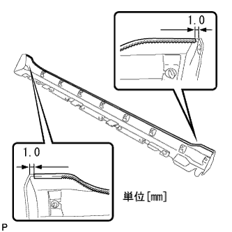
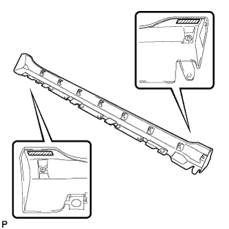

Side Mudguard LH Reassembly |
| 1. Install Side Mudguard Protector LH |
Clean Side Mudguard Double-sided Tape Installation Surface
Using an infrared lamp, etc., warm the double-sided tape remaining on the side mudguard.
While it is warmed with an infrared lamp, etc., rub off the double-sided tape remaining on the side mudguard with a shop rag, etc.
Clean with white gasoline.
 |
Install a new side mudguard protector LH in the position shown in the illustration.
| 2. Install Molding Tape NO.1 |
Clean Side Mudguard Double-sided Tape Installation Surface
Using an infrared lamp, etc., warm the double-sided tape remaining on the side mudguard.
While it is warmed with an infrared lamp, etc., rub off the double-sided tape remaining on the side mudguard with a shop rag, etc.
Clean with white gasoline.
 |
Install 2 new molding tapes No.1.